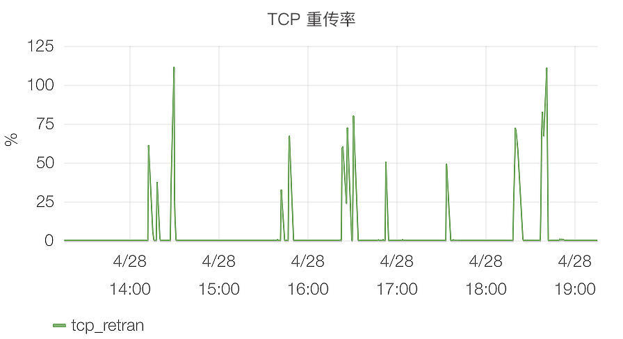
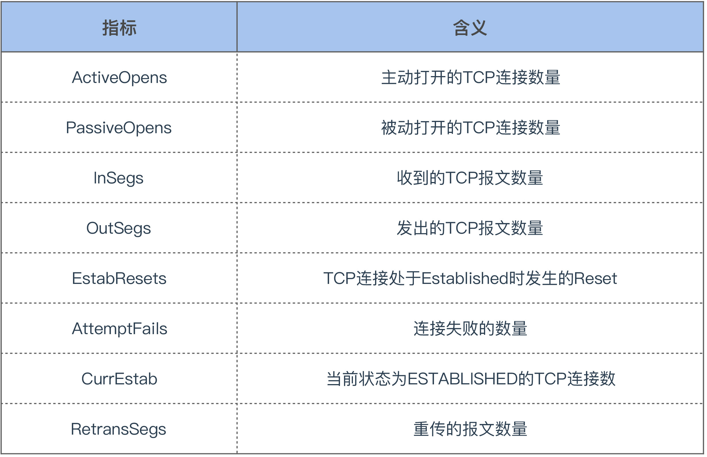
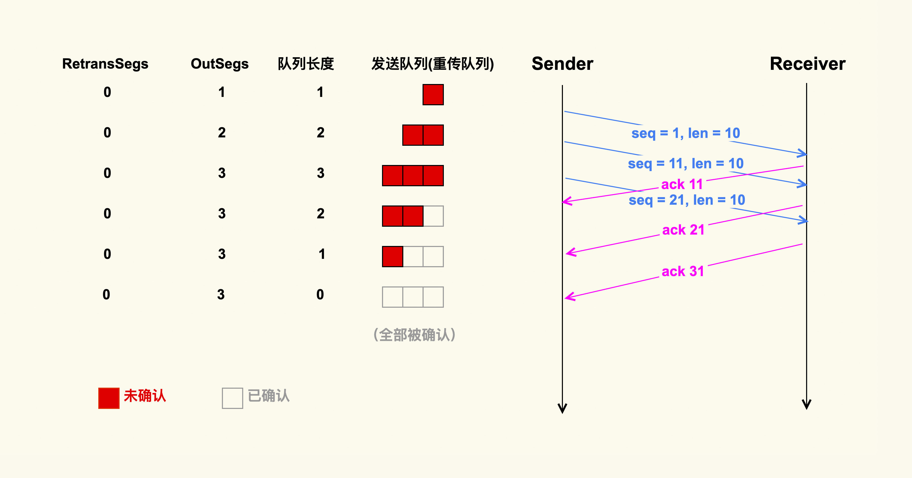
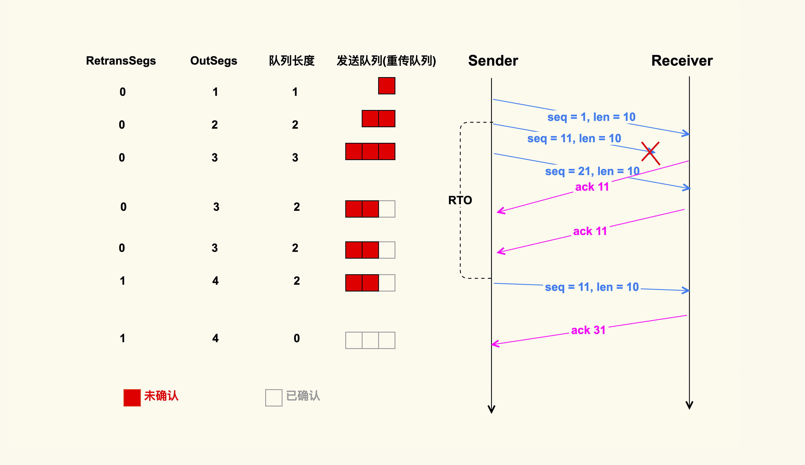
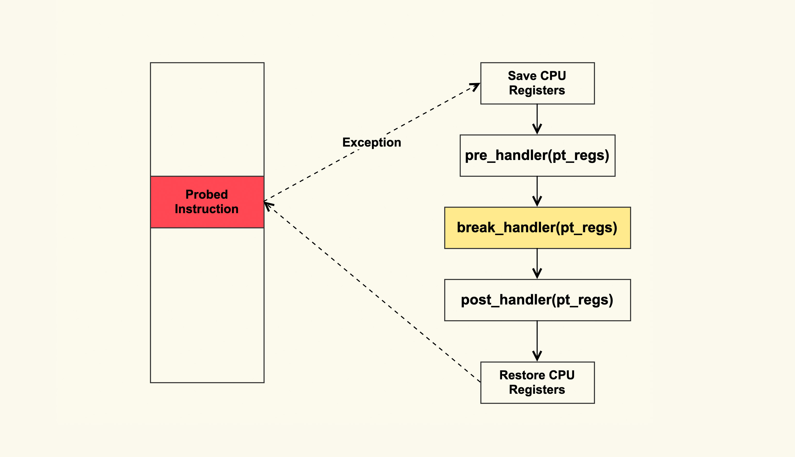

- 00 开篇词 如何让Linux内核更好地服务应用程序？.md.html
- 01 基础篇 如何用数据观测Page Cache？.md.html
- 02 基础篇 Page Cache是怎样产生和释放的？.md.html
- 03 案例篇 如何处理Page Cache难以回收产生的load飙高问题？.md.html
- 04 案例篇 如何处理Page Cache容易回收引起的业务性能问题？.md.html
- 05 分析篇 如何判断问题是否由Page Cache产生的？.md.html
- 06 基础篇 进程的哪些内存类型容易引起内存泄漏？.md.html
- 07 案例篇 如何预防内存泄漏导致的系统假死？.md.html
- 08 案例篇 Shmem：进程没有消耗内存，内存哪去了？.md.html
- 09 分析篇 如何对内核内存泄漏做些基础的分析？.md.html
- 10 分析篇 内存泄漏时，我们该如何一步步找到根因？.md.html
- 11 基础篇 TCP连接的建立和断开受哪些系统配置影响？.md.html
- 12 基础篇 TCP收发包过程会受哪些配置项影响？.md.html
- 13 案例篇 TCP拥塞控制是如何导致业务性能抖动的？.md.html
- 14 案例篇 TCP端到端时延变大，怎样判断是哪里出现了问题？.md.html
- 15 分析篇 如何高效地分析TCP重传问题？.md.html
- 16 套路篇 如何分析常见的TCP问题？.md.html
- 17 基础篇 CPU是如何执行任务的？.md.html
- 18 案例篇 业务是否需要使用透明大页：水可载舟，亦可覆舟？.md.html
- 19 案例篇 网络吞吐高的业务是否需要开启网卡特性呢？.md.html
- 20 分析篇 如何分析CPU利用率飙高问题 ？.md.html
- 加餐 我是如何使用tracepoint来分析内核Bug的？.md.html
- 结束语 第一次看内核代码，我也很懵逼.md.html
- 捐赠
15 分析篇 如何高效地分析TCP重传问题？
你好，我是邵亚方。
我们在基础篇和案例篇里讲了很多问题，比如说RT抖动问题、丢包问题、无法建连问题等等。这些问题通常都会伴随着TCP重传，所以我们往往也会抓取TCP重传信息来辅助我们分析这些问题。
而且TCP重传也是一个信号，我们通常会利用这个信号来判断系统是否稳定。比如说，如果一台服务器的TCP重传率很高，那这个服务器肯定是存在问题的，需要我们及时采取措施，否则可能会产生更加严重的故障。
但是，TCP重传率分析并不是一件很容易的事，比如说现在某台服务器的TCP重传率很高，那究竟是什么业务在进行TCP重传呢？对此，很多人并不懂得如何来分析。所以，在这节课中，我会带你来认识TCP重传是怎么回事，以及如何来高效地分析它。
什么是TCP重传 ？
我在“开篇词”中举过一个TCP重传率的例子，如下图所示：

这是互联网企业普遍都有的TCP重传率监控，它是服务器稳定性的一个指标，如果它太高，就像上图中的那些毛刺一样，往往就意味着服务器不稳定了。那TCP重传率究竟表示什么呢？
其实TCP重传率是通过解析/proc/net/snmp这个文件里的指标计算出来的，这个文件里面和TCP有关的关键指标如下：

TCP重传率的计算公式如下：
retrans = (RetransSegs－last RetransSegs) ／ (OutSegs－last OutSegs) * 100
也就是说，单位时间内TCP重传包的数量除以TCP总的发包数量，就是TCP重传率。那我们继续看下这个公式中的RetransSegs和OutSegs是怎么回事，我画了两张示例图来演示这两个指标的变化：


通过这两个示例图，你可以发现，发送端在发送一个TCP数据包后，会把该数据包放在发送端的发送队列里，也叫重传队列。此时，OutSegs会相应地加1，队列长度也为1。如果可以收到接收端对这个数据包的ACK，该数据包就会在发送队列中被删掉，然后队列长度变为0；如果收不到这个数据包的ACK，就会触发重传机制，我们在这里演示的就是超时重传这种情况，也就是说发送端在发送数据包的时候，会启动一个超时重传定时器（RTO），如果超过了这个时间，发送端还没有收到ACK，就会重传该数据包，然后OutSegs加1，同时RetransSegs也会加1。
这就是OutSegs和RetransSegs的含义：每发出去一个TCP包（包括重传包），OutSegs会相应地加1；每发出去一个重传包，RetransSegs会相应地加1。同时，我也在图中展示了重传队列的变化，你可以仔细看下。
除了上图中展示的超时重传外，还有快速重传机制。关于快速重传，你可以参考“13讲”，我就不在这里详细描述了。
明白了TCP重传是如何定义的之后，我们继续来看下哪些情况会导致TCP重传。
引起TCP重传的情况在整体上可以分为如下两类。
- 丢包- TCP数据包在网络传输过程中可能会被丢弃；接收端也可能会把该数据包给丢弃；接收端回的ACK也可能在网络传输过程中被丢弃；数据包在传输过程中发生错误而被接收端给丢弃……这些情况都会导致发送端重传该TCP数据包。
- 拥塞- TCP数据包在网络传输过程中可能会在某个交换机/路由器上排队，比如臭名昭著的Bufferbloat（缓冲膨胀）；TCP数据包在网络传输过程中因为路由变化而产生的乱序；接收端回的ACK在某个交换机/路由器上排队……这些情况都会导致发送端再次重传该TCP数据包。
总之，TCP重传可以很好地作为通信质量的信号，我们需要去重视它。
那么，当我们发现某个主机上TCP重传率很高时，该如何去分析呢？
分析TCP重传的常规手段
最常规的分析手段就是tcpdump，我们可以使用它把进出某个网卡的数据包给保存下来：
$ tcpdump -s 0 -i eth0 -w tcpdumpfile
然后在Linux上我们可以使用tshark这个工具（wireshark的Linux版本）来过滤出TCP重传包：
$ tshark -r tcpdumpfile -R tcp.analysis.retransmission
如果有重传包的话，就可以显示出来了，如下是一个TCP重传的示例：
3481 20.277303 10.17.130.20 -> 124.74.250.144 TCP 70 [TCP Retransmission] 35993 > https [SYN] Seq=0 Win=14600 Len=0 MSS=1460 SACK_PERM=1 TSval=3231504691 TSecr=0
3659 22.277070 10.17.130.20 -> 124.74.250.144 TCP 70 [TCP Retransmission] 35993 > https [SYN] Seq=0 Win=14600 Len=0 MSS=1460 SACK_PERM=1 TSval=3231506691 TSecr=0
8649 46.539393 58.216.21.165 -> 10.17.130.20 TLSv1 113 [TCP Retransmission] Change Cipher Spec, Encrypted Handshake Messag
借助tcpdump，我们就可以看到TCP重传的详细情况。从上面这几个TCP重传信息中，我们可以看到，这是发生在10.17.130.20:35993 - 124.74.250.144: 443这个TCP连接上的重传；通过[SYN]这个TCP连接状态，可以看到这是发生在三次握手阶段的重传。依据这些信息，我们就可以继续去124.74.250.144这个主机上分析https这个服务为什么无法建立新的连接了。
但是，我们都知道tcpdump很重，如果直接在生产环境上进行采集的话，难免会对业务造成性能影响。那有没有更加轻量级的一些分析方法呢？
如何高效地分析TCP重传 ？
其实，就像应用程序实现一些功能需要调用对应的函数一样，TCP重传也需要调用特定的内核函数。这个内核函数就是tcp_retransmit_skb()。你可以把这个函数名字里的skb理解为是一个需要发送的网络包。那么，如果我们想要高效地追踪TCP重传情况，那么直接追踪该函数就可以了。
追踪内核函数最通用的方法是使用Kprobe，Kprobe的大致原理如下：

你可以实现一个内核模块，该内核模块中使用Kprobe在tcp_retransmit_skb这个函数入口插入一个probe，然后注册一个break_handler，这样在执行到tcp_retransmit_skb时就会异常跳转到注册的break_handler中，然后在break_handler中解析TCP报文（skb）就可以了，从而来判断是什么在重传。
如果你觉得实现内核模块比较麻烦，可以借助ftrace框架来使用Kprobe。Brendan Gregg实现的tcpretrans采用的就是这种方式，你也可以直接使用它这个工具来追踪TCP重传。不过，该工具也有一些缺陷，因为它是通过读取/proc/net/tcp这个文件来解析是什么在重传，所以它能解析的信息比较有限，而且如果TCP连接持续时间较短（比如短连接），那么该工具就无法解析出来了。另外，你在使用它时需要确保你的内核已经打开了ftrace的tracing功能，也就是/sys/kernel/debug/tracing/tracing_on中的内容需要为1；在CentOS-6上，还需要/sys/kernel/debug/tracing/tracing_enabled也为1。
$ cat /sys/kernel/debug/tracing/tracing_on
1
如果为0的话，你需要打开它们，例如：
$ echo 1 > /sys/kernel/debug/tracing/tracing_on
然后在追踪结束后，你需要来关闭他们：
$ echo 0 > /sys/kernel/debug/tracing/tracing_on
由于Kprobe是通过异常（Exception）这种方式来工作的，所以它还是有一些性能开销的，在TCP发包快速路径上还是要避免使用Kprobe。不过，由于重传路径是慢速路径，所以在重传路径上添加Kprobe也无需担心性能开销。
Kprobe这种方式使用起来还是略有些不便，为了让Linux用户更方便地观察TCP重传事件，4.16内核版本中专门添加了TCP tracepoint来解析TCP重传事件。如果你使用的操作系统是CentOS-7以及更老的版本，就无法使用该Tracepoint来观察了；如果你的版本是CentOS-8以及后续更新的版本，那你可以直接使用这个Tracepoint来追踪TCP重传，可以使用如下命令：
$ cd /sys/kernel/debug/tracing/events/
$ echo 1 > tcp/tcp_retransmit_skb/enable
然后你就可以追踪TCP重传事件了：
$ cat trace_pipe
<idle>-0 [007] ..s. 265119.290232: tcp_retransmit_skb: sport=22 dport=62264 saddr=172.23.245.8 daddr=172.30.18.225 saddrv6=::ffff:172.23.245.8 daddrv6=::ffff:172.30.18.225 state=TCP_ESTABLISHED
可以看到，当TCP重传发生时，该事件的基本信息就会被打印出来。多说一句，在最开始的版本中是没有“state=TCP_ESTABLISHED”这一项的。如果没有这一项，我们就无法识别该重传事件是不是发生在三次握手阶段了，所以我给内核贡献了一个PATCH来显示TCP连接状态，以便于问题分析，具体见tcp: expose sk_state in tcp_retransmit_skb tracepoint这个commit。
追踪结束后呢，你需要将这个Tracepoint给关闭：
$ echo 0 > tcp/tcp_retransmit_skb/enable
Tracepoint这种方式不仅使用起来更加方便，而且它的性能开销比Kprobe要小，所以我们在快速路径上也可以使用它。
因为Tracepoint对TCP重传事件的支持，所以tcpretrans这个工具也跟着进行了一次升级换代。它通过解析该Tracepoint实现了对TCP重传事件的追踪，而不再使用之前的Kprobe方式，具体你可以参考bcc tcpretrans。再多说一句，Brendan Gregg在实现这些基于ebpf的TCP追踪工具之前也曾经跟我讨论过，所以我对他的这个工具才会这么熟悉。
我们针对TCP重传事件的分析就先讲到这里，希望能给你带来一些启发，去开发一些更加高效的工具来分析你遇到的TCP问题或者其他问题。
课堂总结
这堂课我们主要讲了TCP重传的一些知识，关于TCP重传你需要重点记住下面这几点：
- TCP重传率可以作为TCP通信质量的信号，如果它很高，那说明这个TCP连接很不稳定；
- 产生TCP重传的问题主要是丢包和网络拥塞这两种情况；
- TCP重传时会调用特定的内核函数，我们可以追踪该函数的调用情况来追踪TCP重传事件；
- Kprobe是一个很通用的追踪工具，在低版本内核上，你可以使用这个方法来追踪TCP重传事件；
- Tracepoint是一个更加轻量级也更加方便的追踪TCP重传的工具，但是需要你的内核版本为4.16+；
- 如果你想要更简单些，那你可以直接使用tcpretrans这个工具。
课后作业
请问我们提到的tracepoint观察方式，或者tcpretrans这个工具，可以追踪收到的TCP重传包吗？为什么？欢迎你在留言区与我讨论。
感谢你的阅读，如果你认为这节课的内容有收获，也欢迎把它分享给你的朋友，我们下一讲见。
© 2019 - 2023 Liangliang Lee. Powered by gin and hexo-theme-book.